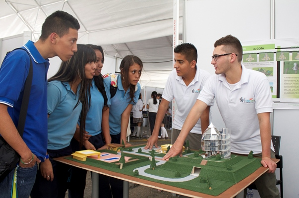

- 


De acuerdo con el Estatuto de la formación profesional del SENA (Acuerdo 008 de 1997), la Formación profesional integral gratuita que imparte el SENA, se orienta al desarrollo de conocimientos técnicos, tecnológicos y de actitudes y de valores para la convivencia social, que le permiten a la persona desempeñarse en una actividad productiva. Esta formación implica el dominio operacional e instrumental de una ocupación determinada, la apropiación de un saber técnico y tecnológico integrado a ella, y la capacidad de adaptación dinámica a los cambios constantes de la productividad; la persona así formada es capaz de integrar tecnologías, moverse en la estructura ocupacional, plantear y solucionar creativamente los problemas y saber hacer en forma eficaz. La persona que recibe la Formación profesional integral del SENA se certifica en competencias.